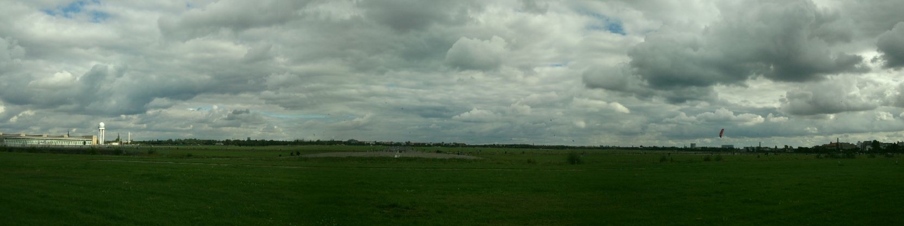
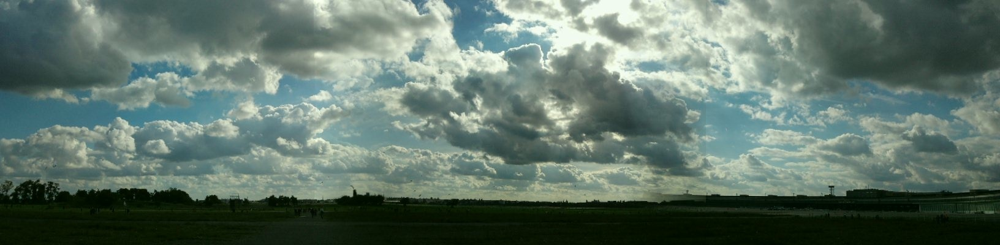

cc 2001 - 2010 Benjamin Birkenhake Digital ist besser
Ich weiß, dass mich ziemlich bald der Berliner Winter erwartet. In Rixdorf riecht es schon an jeder Ecke nach Herbstlaub. Und mir ist inzwischen schon mehrfach glaubhaft versichtert worden, dass der Berlin Winter kein Kindergeburtstag ist.
Aber … Sonntag war ich mit Welf auf dem Flugplatz Tempelhof spazieren.
Ich war im August schon mal kurz dagewesen und schwer beeindruckt.
Aber der gut anderhalbstündige Spaziergang am Sonntag wie warmen und
windigem Wetter hat selbst meine hohen Erwartungen übertroffen. Der
Flughafen Tempelhof ist – so wie er da jetzt steht – das Beste, was
Berlin zu bieten hat.
Tempelhof ist wie die Nordsee, nur ohne Meer.
Die gewaltige Fläche erzeugt schon beim Betreten eine Athmosphäre der Entrückung von der sie umgebenden Stadt. Man tritt mit wenige Schritten aus dem Asphaltdschungel heraus und steht mitten in einer Weite, die nichts von einem will. Tempelhof unterscheidete sich durch zwei Eigenschaften von allen anderen Freizeiträumen, die mir bisher untergekommen sind.

Zum einen ist das Gelände so groß, dass man schon nach wenigen Meter zwar nicht das Gefühl hat, alleine zu sein, aber doch soviel Raum zu den anderen Besuchern zu haben, dass es erfrischend ist. Während mir das Außenalsterufer in Hamburg immer als unanagenehm voll vorkam, hatte ich auf Tempelhof trotz Sonntag und gutem Wetter selbst an den Eingängen nicht dieses Gefühl des Gedränges.
Zum anderen ist das Gelände nicht zweckgebunden. Tempelhof ist kein Zoo, kein Kinoplex, kein Freizeitpark. Tempelhof will nicht, dass man etwas bestimmtes macht, sondern erlaubt Dir, dort zu tun, was immer Du machen magst. Zugleich unterscheidet es sich durch die großen Asphaltflächen erheblich von normalen Parks. Jogger, Radfahrer, Skater, Basektballspieler, Drachensteigenlasser, Ferngesteuerte Autos und Flugzeuge … für alle ist Tempelhof der ideal Platz.
Während wir so über die Wiese spazierten, erklang Mitten auf dem Flugplatz plötzlich Musik und ich musste mich erst drei mal umschauen, um zwei Saxophonspieler im hohen Gras zu finden. Unglaublich.
Ich halte auch nichts von dem Plan aus Tempelhof einen See zu machen. Ich würde eher zum Gegenteil tendieren und fordern, die Außenalster zuzuschütten. Im direkten Vergleich scheinen mir beide Freiräume höchst bezeichnend für die jeweiligen Städt. Alster: Vernügungsraum für ein paar wenige Priveligierte. Templehof: Mit geringsten Mitteln das Großartigste erreichen, für alle.

Fuck hell, ich bin nicht nur versucht, mich auch in einer der tempelhofesquen Sportarten zu versuchen – ich kann mir gar nicht entscheiden. Wahrscheinlich lass ich erstmal mein Fahrrad fit machen und drehe ein paar Runden, und dann kauf ich mir ein Longboard oder bau einen Kastendrachen.
Und zum Schluß möchte ich das Schönste an Tempelhof nicht vergessen: Die Stimmung. Wenn der Berliner Winter mich auf die Probe stellen wird, und mir die Gründe für die "Freundlichkeitsoffensive Berlin" zeigt, dann will ich mich daran erinnern, was für ein toller Tag dieser Sonntag auf Tempelhof war, wie nett, entspannt und glücklich die Berliner sind, wenn man ihnen nur ein bisken Platz, Sonne und Wind läßt.
Kommentare
von Chris #
Siehste mal, auf dem Ex-Flughafengelände war ich noch nie. Muss ich unbedingt nachholen.
Was am Berliner Winter besonders krass sein soll, erschließt sich mir aber selbst nach 24 Jahren Berlin nicht. Klär mich auf!
von ben_ #
Du, das kann ich Dir leider auch nicht sagen … ich krieg das nur immer gesagt.
Aber überhaupt … was machst Du denn in Berlin? Bist Du nicht in Leipzig?
von Joël #
Wird die Wiese noch gemäht? Oder ist das Ganze auch ein wunderschönes, als Freizeitfläche getarntes Experiment für natürliche Sukzession? Ich fänd es wundervoll, wenn alle Berliner_innen während dem Joggen, Skaten, Radfahren, Basketballspielen, Drachensteigenlassen usw. so ganz nebenbei sehen würden, wie aus dem ehemaligen Flughafen ein Wald entsteht.
von ben_ #
Manche Teile werden auf jeden Fall gemäht, da lag noch bahnenweise das vertrocknende Grass. In manchenteilen stand das Grass so hoch, dass ich schätzen würde, dass das nicht gemäht wird.
von Chris #
@ben: Bin seit sechs Jahren in Leipzig, aber geborener Berliner. Und bin auch heute noch relativ häufig in der Hauptstadt. Wir laufen uns da bestimmt mal über den Weg, schätz ich. :)
von Thomas #
Oho, hier lesen noch andere Leipziger. Verrückt.
Tja, was dem Berliner sein Flughafen, ist dem Leipziger sein Tagebau. Werde ich mir auf meine Liste der zu besuchenden Orte schreiben.